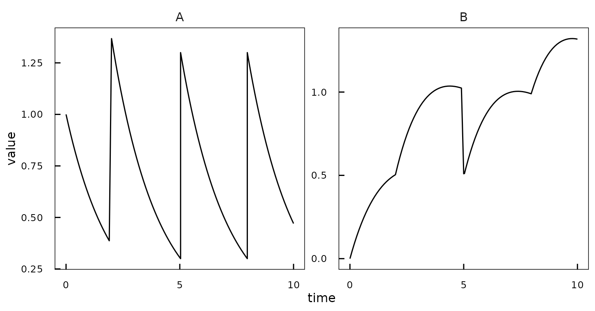
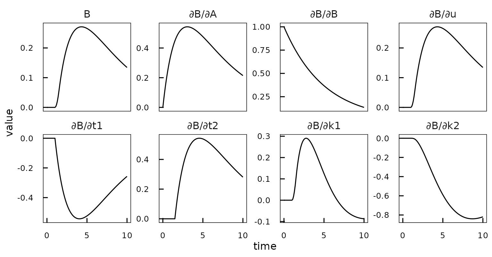
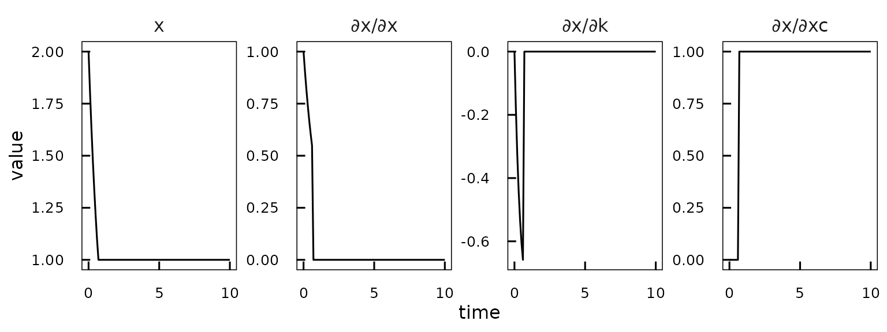
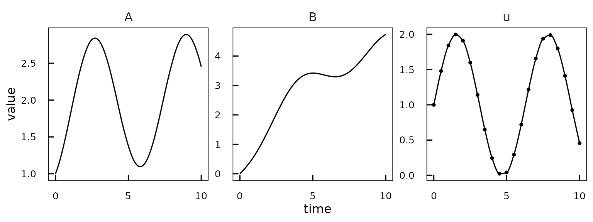

Discontinuities of the decay chain: resets of a state at a time or at a root, switches of the right-hand side, a terminating root, and input data. The sensitivities take every jump, also where a parameter moves the time of the jump. Mechanism and transport of the sensitivities: Events, switches and saltation.
Model definition
events of cppODE() is a data
frame with one row per event:
| column | content |
|---|---|
var |
the state that is reset |
time |
the event time, a number or an expression of the parameters |
root |
a root expression of states, parameters and
time; the event fires where it crosses zero |
value |
the value, a number or an expression of states,
parameters and time
|
method |
"replace" (default), "add" or
"multiply"
|
Each row has exactly one of time and root,
the other NA. Below, a dose of \(A\) at t_e, a loss of \(B\) by the factor f at
t_e + delay, and a refill of \(A\) by dose whenever \(A\) falls to Amin.
eqns <- c(A = "-k1*A", B = "k1*A - k2*B")
parms <- c(A = 1, B = 0, k1 = 0.5, k2 = 0.2)
times <- seq(0, 10, by = 0.1)
events <- data.frame(var = c("A", "B", "A"),
time = c("t_e", "t_e + delay", NA),
root = c(NA, NA, "A - Amin"),
value = c("dose", "f", "dose"),
method = c("add", "multiply", "add"))
dosed <- cppODE(eqns, events = events, modelname = "g2_dosed", compile = FALSE)
halved <- cppODE(eqns, events = data.frame(var = "B", time = "t_e", value = "B/2"),
modelname = "g2_halved", compile = FALSE)rootfunc, a vector of expressions, ends the solve at the
first zero crossing of any of them. A switch is a comparison on a state
or on time in the right-hand side, also inside
piecewise(), ifelse(),
Heaviside() or sign(). forcings
names input data.
stopped <- cppODE(eqns, rootfunc = "B - Bmax", modelname = "g2_stopped", compile = FALSE)
pulse <- cppODE(c(A = "piecewise(u, time >= t1 && time < t2, 0) - k1*A",
B = "k1*A - k2*B"), modelname = "g2_pulse", compile = FALSE)
slide <- cppODE(c(x = "-k*x + p*(x < xc)"), modelname = "g2_slide", compile = FALSE)
forced <- cppODE(c(A = "u - k1*A", B = "k1*A - k2*B"), forcings = "u",
modelname = "g2_forced", compile = FALSE)
compile(dosed, halved, stopped, pulse, slide, forced, output = "guide2", cores = 2)
attr(dosed, "parameters")
#> [1] "k1" "k2" "dose" "f" "t_e" "delay" "Amin"Events
The symbols of the event columns are parameters of the model.
maxroot of solveODE() caps the
firings per root event (default 1), roottol is the
tolerance of the root location.
pE <- c(parms, t_e = 2, dose = 1, delay = 3, f = 0.5, Amin = 0.3)
outE <- solveODE(dosed, times, pE, maxroot = 3)
ggplot(longFormat(outE, sens = FALSE), aes(time, value)) +
geom_line() +
facet_wrap(~panel, scales = "free_y") +
scale_x_continuous(n.breaks = 3)
A time event inside the output window adds the event time to the output, with the state after the event. A root event adds two rows, the states before and after the reset.
nrow(outE$variable)
#> [1] 105
before <- which(diff(outE$time) < 1e-12)
cbind(time = outE$time, outE$variable)[sort(c(before, before + 1)), ]
#> time A B
#> [1,] 5.034481 0.3 0.5112582
#> [2,] 5.034481 1.3 0.5112582
#> [3,] 7.967156 0.3 0.9895994
#> [4,] 7.967156 1.3 0.9895994The sensitivities in the event parameters include the shift of the event times:
outE$tangent[nrow(outE$variable), , c("t_e", "delay", "dose", "f", "Amin")]
#> sens
#> variable t_e delay dose f Amin
#> A 0.171965226 0.00000000 1.067708 0.0000000 -2.4125907
#> B 0.005718182 -0.02807061 1.030995 0.3749164 0.5796254A value may read the states: "B/2" with
"replace" halves \(B\).
outH <- solveODE(halved, times, c(parms, t_e = 2))
outH$variable[outH$time == 2, ]
#> A B
#> 0.3678790 0.2520342A time event at the first output time applies before the solve starts; one before the first or at or after the last output time is ignored.
Terminating root
The solve ends at the first zero of a rootfunc
expression, here when \(B\) reaches
Bmax.
outR <- solveODE(stopped, times, c(parms, Bmax = 0.4))
tail(cbind(time = outR$time, outR$variable), 2)
#> time A B
#> [13,] 1.200000 0.5488117 0.3963603
#> [14,] 1.218811 0.5436739 0.4000000rootfunc = "equilibrate" ends at a steady state instead
(chapter 5).
Switches
The solver locates every switch of the right-hand side as a root and
continues on the other branch, so a short pulse is not stepped over. A
switch adds no output row and does not count towards
maxroot. The sensitivities in t1 and
t2 come from the jump of the right-hand side.
outP <- solveODE(pulse, times, c(A = 0, B = 0, k1 = 0.5, k2 = 0.2, u = 1, t1 = 1, t2 = 1.5))
ggplot(longFormat(outP, "B"), aes(time, value)) +
geom_line() +
facet_wrap(~panel, scales = "free_y", ncol = 4) +
scale_x_continuous(n.breaks = 3)
Where both branches point onto the switching surface, the solution
slides along it (sliding).
Above xc the state decays, below it grows towards
p/k; it reaches xc and stays, and depends on
xc alone from then on. \(\partial
x/\partial p\) is zero throughout and left out.
outS <- solveODE(slide, times, c(x = 2, k = 1, p = 3, xc = 1))
ggplot(subset(longFormat(outS), panel != "∂x/∂p"), aes(time, value)) +
geom_line() +
facet_wrap(~panel, scales = "free_y", ncol = 4) +
scale_x_continuous(n.breaks = 3)
floor(), round(), abs(),
max() and the other kinks and steps take parameters and
forcings only: on a state or on the time they are an error, since no
root locates them. Write such a step with comparisons, see expressions.
Forcings
A forcing is input data, given to solveODE() as a named
list of data frames with columns time and
value. The model sees the monotone cubic Hermite
interpolant of the points, constant outside them; forcingValues()
evaluates it the same way.
tu <- seq(0, 10, by = 0.5)
u <- list(u = data.frame(time = tu, value = 1 + sin(tu)))
outF <- solveODE(forced, times, parms, forcings = u)
dimnames(outF$tangent)$sens
#> [1] "A" "B" "k1" "k2"
input <- data.frame(time = times, panel = "u", value = forcingValues(times, u)[, "u"])
ggplot(rbind(input, longFormat(outF, sens = FALSE)), aes(time, value)) +
geom_line() +
geom_point(data = transform(u$u, panel = "u"), size = 1) +
facet_wrap(~panel, scales = "free_y") +
scale_x_continuous(n.breaks = 3)
A forcing is data, not a parameter, and has no sensitivity.